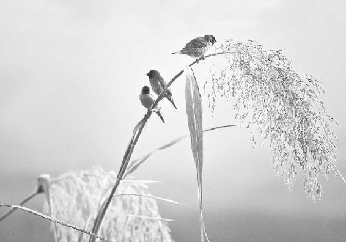
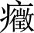
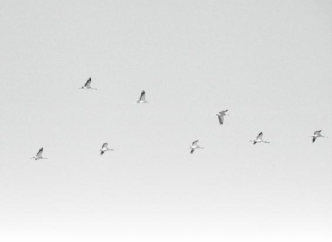
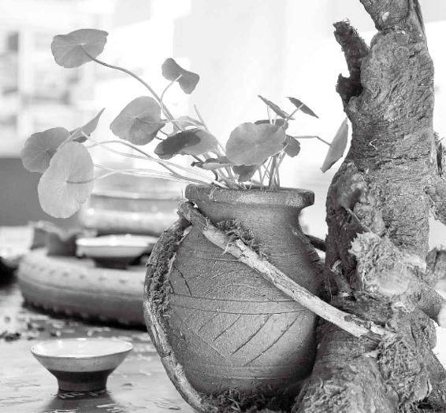

坚信“有志者，事竟成”的人叫“有智无慧”。有智力，但没有那种转弯儿的智慧。
要顺应天地四季的变化，不要人为地把自己的生活变成没有了四季之分。
如果从“根”上，从四季上来调理身体。跟着四时阴阳的变化走，你也就算个得道的人了。
经文：
夫四时阴阳者，万物之根本也，所以圣人春夏养阳，秋冬养阴，以从其根，故与万物沉浮于生长之门，逆其根，则伐其本，坏其真矣。故阴阳四时者，万物之终始也，死生之本也，逆之则灾害生，从之则苛疾不起，是谓得道。
徐文兵：接下来，我们得说一说“甲型H1N1病毒”。我说这个问题就是要强调两点：第一，大家记住，有因不见得有果。我们经常简单粗暴地认为，有因必有果。“有志者，事竟成”“只要功夫深，铁杵磨成针”，这些俗语讲的都是有因必有果。其实世界上的事情并不是这样的。
有因不见得有果。
梁冬：我的观点是：这一个因不一定结这一个确定的果。
徐文兵：这你就扯到另外一件事儿上了。咱们就说“有志者，事竟成”，这是真的吗？
梁冬：这倒不一定。
徐文兵：为什么不一定？
梁冬：反正我看过很多有志的人最后也没有成功。
徐文兵：弄不成，自个儿抹脖子的也有。你要老是坚持这种思维方式的话，就叫有智无慧。他有智力，但他没有那种转弯儿的智慧。哲学是拐弯的学问，如果要上升到玄学的话，它就是门圆圈的学问。
坚信“有志者，事竟成”的人叫“有智无慧”。有智力，但没有那种转弯儿的智慧。
为什么有因不见得有果呢？因为因果之间还有个“缘”字，因、缘、果。我们说这是一桩好因缘，它含有两层意思：第一，有一个诱因；第二，有一个生长条件，这样才会结果。病毒或者是细菌，都是因。那么有了它就一定会造成相应的病理症状吗？比如说猪流感，现在叫甲型H1N1病毒，我们就一定会感染这种病毒吗？一定会高烧，会呕吐腹泻，会肌肉酸痛，然后会死人吗？答案是不一定。为什么不一定？如果你的身体不给它提供那种发病条件的话，就算是你感染了，相安无事。本来这个病叫猪瘟，能让猪死，不让人死，也不知道现在社会是人更像猪了，还是猪更像人了。反正这个病毒会感染到人身上了。
为什么有因不见得有果呢？因为因果之间还有个“缘”字，因、缘、果。
所以中医关心的不是那个因。很多人反对中医说：“你们中医连病毒都搞不清楚，怎么治病？”要我说，这种人的思维就是很拙劣。难道我们家进了贼，还必须得先问清楚那个贼姓甚名谁，哪方人士，哪个门派，然后才去把他赶走吗？没必要吧？他是个贼，你要么关门打狗，把他暴打一顿，顺便也把你们家的坛坛罐罐打烂了；要么就开门逐寇，围三缺一，你从哪儿来，让你出去，然后我再总结经验，把我们家的篱笆扎紧了。至于那个贼是谁，我们有必要知道吗？我看护好自家的院子就得了。所以中医治疗是重缘，通过改善环境来达到消灭细菌、病毒的结果。
很多人反对中医说：“你们中医连病毒都搞不清楚，怎么治病？”要我说，这种人的思维就是很拙劣。难道我们家进了贼，还必须得先问清楚那个贼姓甚名谁，哪方人士，哪个门派，然后才去把他赶走吗？中医治疗是重缘，通过改善环境来达到消灭细菌、病毒的结果。
那个“因”进到我的身体里来了，我虽然不知道它是谁，但是我把你赖以生存的生长条件给破坏掉了，这个“因”在我这儿待不住了，自己走人了，或者它就待在那儿自取灭亡。这就像敌人进攻以后，我知道自己的力量不足以抗衡他，那怎么办？我坚壁清野，敌进我退，不给敌人任何发展的条件。这样的话，敌人连待都待不住，自己走掉了。所以中医不重视因，重视缘。
我们发现，适合甲型H1N1病毒生长的人体条件是什么呢？又湿又热的体质。
光有湿，这病还发不起来；光有热，它要活活被烧死。就是那种闷着，好像火烧湿木头的那个状态，正好是这种病毒最佳的生长条件。中医面对这种情况会怎么办？我们会先把他的湿热体质给改善了。比如说流感，老年人不容易得，儿童也不容易得，为什么？老年人体内可能有湿，但是没有热，他热乎不起来；小孩子是纯阳之体，有热，但是湿气又不重。除非他天天喝冷饮、嚼冰棍、喝碳酸饮料。最容易发病的年龄是什么？青壮年。青壮年的体质正好是又有湿，又有热。虽然免疫功能挺强，但是这些人过分劳作，然后脾胃功能低下，吃了很多富有营养的东西，消化不了就变成了痰湿浊液留在体内。就像我们平常做的细菌培养基——琼脂一样，他准备了一份儿丰厚的营养，等待着病毒的光临，所以见一个得一个。
最容易发病的年龄是什么？青壮年。
梁冬：这就是为什么美国比较流行这种疾病的原因。因为他们那边冷饮多，ice-cream也多。
徐文兵：很多人说：“我们要提高免疫力，增强人体的免疫力，才不会感染甲型H1N1病毒。”我说：“你错了。正是那种免疫力过于亢进的人，体内热邪比较重的人才容易得这个病。”
梁冬：上次我们讲到了“肾气浊沉”，我看的这个版本叫“肾气独沉”，这个有什么区别？
徐文兵：“独”是错别字。我补充一句，以后我们讲《黄帝内经》会讲到五运六气，那大家在学《黄帝内经》的时候，请记住这么一句话“善言天者，必有征于人”。你把天上的事说得玄里巴几的，我要让你落实到人的身上，得应验它。“善言古者，必有节于今”也是同样的意思。
“善言天者，必有证于人”。“善言古者，必有验于今”也是同样的意思。
为什么我这么热爱《黄帝内经》，因为它把古人的智慧以及很多生活规律都总结出来了，而且还把一些事情预测出来了。我们在讲今年（“今年”是指2009己丑年，下面的“今年”亦同）的运气时，我说今年是土运不及的一年，这是根据《黄帝内经》推算出来的。所以《黄帝内经》不仅关心日对地球的影响，它还关心月，关心到五行。
五行，就是五大行星对地球的影响。这个总结出来的规律，就是每十年有一个变化。
什么叫五行？就是五大行星对地球的影响。这个总结出来的规律，就是每十年有一个变化。也许有一年，水星对地球的影响要变大，我们叫这年叫做“水太过”；也许有一年是金星对地球的影响变大了。那叫“金太过”，比如说今年是什么年？叫土运不及，就是说土星对地球的影响要减弱。对应到人的疾病来讲，人体的土对应的是什么呢？
梁冬：脾胃。
徐文兵：脾胃的功能就弱。当人的脾胃功能减弱时，湿气就容易加重。今年的自然环境就给细菌或者病毒提供了一个可乘之机。对大多数人来说，今年大家的脾胃功能普遍都比较差，相当于湿气较重。
另外，什么叫六气？中医把每年分成六段。有初之气，从大寒开始算；然后有二之气，今年的二之气正好就是甲型H1N1病毒盛行的这一段时间，就是湿加上热，是太阴湿土加上了少阴的君火，正好这个病一下就起来了；再往下走到三之气，就是5月21日到7月22日这段时间，是湿上加湿，就是说这种病不那么依靠热邪，而是依靠更重的湿气了，这样的话，可能到下一阶段病会更加严重。如果它对热邪的依赖比较重，到下一个阶段热气不足的时候，它就消亡得很快。
大家可以看一下《黄帝内经》的“素问篇”中的“六元正纪大论”里就谈到了今年是己丑年，凡是属甲和己的年都属土。甲年是土太过，己年是土不及。土不及那年发生的病，你去查查看新华社对这个猪流感，或者现在叫甲型H1N1病毒感染疾病的发病的症状，对应一下，上吐下泻、肌肉酸痛，这全是脾胃湿气太重的表现，《黄帝内经》早就原原本本地给我们写好了。如果你看到这一段的时候，就会觉得这本书真值得我们去读一读。
所以，以前的中医大夫对今年是什么年？什么运太过？什么运不及？会发什么病？容易出现什么症状？什么药应该用得多一些？什么药应该少用？明明白白，而我们现在都不讲。
土不及的年份，对水的克制就会弱一点。另外，猪是属什么呢？
梁冬：属水。
徐文兵：所以它携带的病毒就容易发作。这是我们中医对它的认识。我建议大家要经常观察自己有没有湿热，你不要关心周围人是不是有那个病毒，你更要关心的是自己身上有没有那个病毒的培养基。大家每天早上伸伸舌头，如果舌头是血红的，你有热；如果舌苔是厚厚的，你有湿。
梁冬：我现在这个舌苔厚不厚啊？
徐文兵：你就是一个易感人群。怎么办啊？很多人早晨拿牙刷刮舌苔。我说：“你有本事把那牙刷伸到肠子里去刮一刮！”舌苔厚是什么？“有诸内必形于诸外”，你体内有湿浊，才会表现在舌头上。所以我建议大家，土不及的时候，饮食要清淡，多吃芳香化湿的食物。
徐文兵：我们以前炖猪肉都用什么？八角。而现在世界卫生组织认可的是一种叫达菲的药，它的主要成分是从哪儿提炼出来的？八角！对付湿浊之症状，就得用八角来消除它的阴寒之性。
炖猪肉为什么用八角？因为可以消除它的阴寒之性，对付湿浊之症状。
梁冬：猪肉烤着吃比较好一点。
徐文兵：在特殊情况下，猪肉除了烤着吃以外，还可以加佐料，比如用八角的温性来中和猪肉的凉性。相反，懂得做菜的人，做羊肉的时候切忌放八角。因为这样会热上加热，而且做出来还不好吃。做羊肉很简单，用点葱、姜、萝卜，加点盐，清炖最好。用葱、姜、萝卜是为什么？去羊肉的膻味。现在的羊肉改良了，不那么膻了，你拿盐水炖，出来就是一锅好羊肉。相反，吃鱼的时候，你必须得放特别辛、特别温的药，比如说桂皮、八角，这样做出来才好吃。为什么好吃？因为符合你的天性，这是我们中国人的智慧。
做羊肉的时候切忌放八角。因为这样会热上加热，而且做出来还不好吃。吃鱼的时候，必须得放特别辛、特别温的药，比如说桂皮、八角，这样做出来才好吃。为什么好吃？因为符合你的天性，这是我们中国人的智慧。\
梁冬：吃点儿别的什么肉，能改善这样一个湿热的状况呢？
徐文兵：湿热本身就不该吃肉， 这时候就应该熬上砖茶喝。所以，我们要学学那些吃肉、吃油腻多的人的养生方法，熬壶砖茶喝，再在里面稍微加点盐（因为光喝砖茶容易涩），防止体液流失太多。我建议大家，有热的话，要吃一点清心火的东西，比如说炒点苦瓜吃、用莲子心泡点水，或者干脆就弄点黄连。如果你体内有湿，一是要忌口，不要再吃那些湿气重的食物，比如说肉类。再一个，水果还没有下来的时候，不要吃。我反对吃不应季的水果。那吃点什么？粘腻不清的东西？它反义词是干爽。所以要多吃点烤的东西，比如说锅巴、饭焦、烤馒头片。
我反对吃不应季的水果。
梁冬：刮刮油。
徐文兵：我们也可以把脆生生的青菜，用蒜茸炒或者直接清炒，如果不喜欢油，就白水一焯。广东人经常是白水焯个生菜，挺好吃的，这些都是清热的。
如果能摘点野菜，比如说苦菜、蒲公英、紫花地丁，那就更好。当我们处在湿和热，也就是太阴湿土加上少阴君火的阶段，而下一个阶段就是从5月21日到7月22日，这时候，两个太阴湿土叠在一块儿了，湿上加湿，这时大家一定要保持外面的干燥和肠胃的干爽。如果端午节快到了，我建议大家少吃粽子。应该去采点艾叶，弄点菖蒲，菖蒲就是一味特别好的去痰、浊、湿的药。
梁冬：菖蒲怎么弄呢？
徐文兵：弄点菖蒲的根、叶，然后熬成茶喝。那个粽子就别吃了，又粘又腻不好消化。
不要人为地把生活变得没有四季之分
梁冬：上次讲到了“肾气独沉”，现在该讲“夫四时阴阳者，万物之根本也”。
徐文兵：这要开始总结性发言了。四时就是四季阴阳的变化，也就是寒热的交替，光照时间的延长和缩短，它的变化是我们身体跟着它走的那个阴阳平衡的根和本。根和本有什么区别呢？根的反义词是什么？
四时就是四季阴阳的变化，也就是寒热的交替，光照时间的延长和缩短，它的变化是我们身体跟着它走的那个阴阳平衡的根和本。
梁冬：叶嘛！本的反义词就是末嘛！
徐文兵：落叶归根。本的反义词肯定是末。根的反义词是叶或者梢，这个说法是我在目前状态下想到的，我觉得根是root，为什么呢？我老想，当你对一个汉字不理解的时候，你把它翻译成英文试试。这个本不是root，它是树干。
“根”的反义词是“叶”；“本”的反义词是“末”，是树干，“末”也是树的分支和梢节。
梁冬：是吗？
徐文兵：是树干，末也是树的分支和梢节，说到这个，大家如果有不同意见，可以告诉我本不是root，因为《说文解字》上说：“木上曰末”，“木下曰本”，书说的很含糊，你应该直接告诉我，土上边算什么，土下边算什么也行。但事实上不是，所以我们说照顾根本，是照顾埋在地下、粗壮的主干。
梁冬：那个称之为本。
徐文兵：对，说到“万物之根本也”，也就是说：在地球上生活的所有一切动物和植物，它的那种力量，或者它那种物质，力量是阳，物质是阴，取决于四时阴阳的变化。如果没有这种四季交替和更迭的话，它那种有赖于生存的根和本也就不存在了，那么附着在土地上所有一些美丽的事情都不存在了。
梁冬：现在又有暖气，又有空调，然后冬天也可以补足，夏天也可以拉回来，这样的话，四季就不那么分明之后，是不是万物的根本就会被动摇呢？
现在又有暖气，又有空调，然后冬天也可以补足，夏天也可以拉回来，这样的话，四季就不那么分明之后，万物的根本就会被动摇。
徐文兵：就会被动摇了，首先表现出来就是物种逐渐的灭掉。也不会那么丰富多彩了。很多人都说：赤道适合人类居住吗？
梁冬：不是很适合。
徐文兵：南北极也根本没法让人类生活、居住。世界上的物种，特别是人类，最优秀的、最发达的地区都在什么纬度？
梁冬：都在北纬。
徐文兵：在这些地方，四季分明，植物和动物丰富多样，同时也导致了以植物和动物为食物的人类营养物质丰富多样，因此人杰地灵。
很多高度发达的国家，比如说四大文明古国，你看它所在位置，就在这一带。
我觉得要顺应天地四季的变化，不要人为地把自己的生活变成没有了四季之分。有人经常说哪儿哪儿四季如春，适合居住。如果是这样，这里的植物发育的时候怎么秀，怎么穗，怎么去孕育果实，怎么去结籽儿？
要顺应天地四季的变化，不要人为地把自己的生活变成没有了四季之分。
梁冬：“夫四时阴阳者，万物之根本也。所以圣人春夏养阳，秋冬养阴，以从其根。”
徐文兵：我们说人要有知、有觉。很多时候，有些人还真不如动物，动物虽然无知，但它有觉，知道怎么踩着四季的步点走。
有些人还真不如动物，动物虽然无知，但它有觉，知道怎么踩着四季的点走。
梁冬：地震来了，它知道跑。
徐文兵：我有个病人，她说她天性就非常敏感。她说我们家孩子哭了是饿了，是热了，还是要去巴巴了，她能听出来。尽管他就是哭，但是她是位很敏感的母亲。
地震那天，她正好在四川。那天中午，她就是烦躁得睡不着觉，那时候，她刚生完孩子。她说：“楼下有条狗，那天中午那条狗的叫声就不对。”那狗是什么？
梁冬：狗就有觉嘛。
徐文兵：然后那天就地震了，她抱着孩子先躲到卫生间，然后又冲出去，这就是一种觉。可是我们现在就发展了后天的那个所谓的“意”，很刻意地把先天的“觉”给磨灭掉了，这就更谈不上“悟”了，全部把它们蒙蔽掉。又学了一些“知”，如果这些“知”是真知灼见也就算了，学的还是一些歪门邪道。到最后，就把自己的身体搞坏了。
我们现在很刻意地把先天的“觉”给磨灭掉了，更谈不上“悟”了，又学了一些“知”，如果这些“知”是真知灼见也就算了，学的还是一些歪门邪道。到最后，就把自己的身体搞坏了。
人活着一定要顺其本性
徐文兵：明白了四季的变化对动、植物的影响以后，圣人是怎么做的呢？说到这，我们先来复习一下什么叫“圣人”。“上古天真论”说了，做人一共有四个境界，最高的境界叫真人。真人是什么？“提挈天地，把握阴阳，呼吸精气，独立守神，肌肉若一”——这是真人。还有一种比真人稍微低一点的，“亦归于真人”叫至人。“游行于天地之间，视听于八达之外”，这是我们仰慕的人。但圣人是“适嗜欲于世俗之间”，跟大家一块儿混，跟大家一块儿处得也不错。然后也能“和于阴阳”，用一句话来总结就是，肉体在人间、灵魂在高处，这是圣人，知“道”的人和得“道”的人。
梁冬：就是拎得清的人。
徐文兵：春夏的时候，日照的时间越来越长，阳气越来越足。人怎么办？养阳！到秋冬，日照的时间越来越短，天气越来越凉爽，我们就得养阴，两不耽误。这就落实到一个问题，什么叫“养”？
所谓“养”就是顺其性，顺其本性叫“养”，逆其本性就叫“杀伐”。
我们经常说感谢父母的养育之恩，要懂养生之道。其实关于“养”我总结了一句话，叫顺其性。顺其本性叫“养”，逆其本性就叫“杀伐”。当春天万物萌动、生发的时候，我顺着它那个劲走，这叫养生吧。在夏天，万物疯狂热烈地拔节的时候，我就要养长了，我就要热情洋溢起来，“若有爱在外”。到秋天，我又急流勇退，往回收敛，这也叫顺其性。你顺着天性去养你的人性，这就叫养。
圣人怎么养阳呢？当春天阳气萌动、生发，你内心里感觉发情的时候，顺着这样的趋势走，你的阳气就顺利地得到了生长。但这会儿最怕什么？倒春寒，怕杀而不赏，怕惩罚。
养生叫“生而勿杀，予而勿夺，赏而勿罚”，这叫不折了你的锐气。古代兵家就说明天要打仗了，头一天，将军跟人下盘棋。平常他老输给那老头儿，没想到这次，他连赢好几盘。打完仗以后，老头的儿子告诉他：我家老头说怕折了你的锐气。这就是中国人的智慧！你看，宋江带兵出征，狂风一卷，帅旗“嘎巴”一声被折断了，吴用马上就说咱们退兵吧。
梁冬：这叫外应！
徐文兵：你要是不懂得阴阳之道，在那种情况下硬出兵。人家就会说这人是傻帽儿。事实上那次出征，晁盖就不听话，结果中了史文恭的毒箭，要了命了。
这就叫春夏养阳。刚才说到了“傻帽儿”这个词，“傻帽儿”是什么？杀阳。喝冷饮、吃冰棍、吹空调，这些绝对不是圣人会干的事儿。所以到了热的时候，你怎么办？喝口热茶。喝完了以后，舌下生津，液下出汗，习习生风，那种感觉真是爽。
喝茶也有茶道，什么叫茶道？喝完茶以后得到了一种出神、得道的感觉。写书法写到凝神静气，一下就力透纸背，那你也得道了，不过得的是书道。现在都落到了“术”这种境界，比如说茶艺。
什么叫茶道？喝完茶以后得到了一种出神、得道的感觉。写书法写到凝神静气，一下就力透纸背，那你也得书道了。懂道的人通过吃饭就能感受到。不过，饭一定要做得“和”，就是说，你是什么体质，现在是什么季节都要明白。
徐文兵：吃那种味儿产生了一种得道的感觉。而很多愚笨的、愚蠢的人必须通过吸毒才能得到那种感觉，但是，懂道的人通过吃饭就能感受到。不过那顿饭一定要做得“和”，就是说你是什么体质，现在是什么季节，这一次做了什么味道的饭，舌尖一舔，嚯！
梁冬：高潮就来了。
徐文兵：任督二脉就通了，得道了。你说，做一个人多幸福呀！
梁冬：人生难得嘛。
徐文兵：现在大家都逆于阴阳，闹出了一身的病，所以我对很多人的评价是苦中作乐！
现在大家都逆于阴阳，闹出了一身的病，所以我对很多人的评价是苦中作乐！
有一次，我问过朋友这样一个问题——“你过得幸福吗？”
他说挺幸福的。“你为什么觉得幸福？”他说：“你看，我这儿长了块湿疹，我挠挠它就觉得特舒服。”
我说：“你想没想过，你这种舒服是建立在先有病的基础上的，其实你本来不应该有这种舒服感的。如果你没患这个病，你不就没法感受到这种所谓的舒服了吗？”
梁冬：这让我想起一个朋友，他说：“香港脚是不能随便治好的，因为挠香港脚是很舒服的一件事情。”
徐文兵：这就叫苦中作乐。在一种病态的状态下追求病态的快感，还觉得自个儿活得挺幸福，他已经体会不到健康的人才有的“肾气有余，气脉常通”的那种感觉。那么他们落下的病是从哪儿得来的？主要是春夏不养阳。
什么叫苦中作乐？在一种病态的状态下追求病态的快感，还觉得自个儿活得挺幸福。
梁冬：秋冬不养阴。那秋冬如何养阴呢？
徐文兵：立秋以后，我们的第一感觉是从闷热、潮湿的状态转到了秋高气爽。但爽过头后是一种什么样的感觉？燥。怎么办？你看，到秋天，梨、苹果、柿子这些水果都熟了，正好润燥。
真正讲究的人都是吃来年的柿子。
梁冬：天地自有平衡法则。
徐文兵：老天把你们造出来，让你们都活得挺美。结果你们认为自个儿已经长大成人了，就开始跟你爹妈，跟老天爷对着干，最后闹得自己很痛苦。
老天把你们造出来，让你们都活得挺美。结果你们认为自个儿已经长大成人了，就开始跟你爹妈，跟老天爷对着干，最后闹得自己很痛苦，一身是病。

天地自有平衡法则。大自然的一切生灵，只有与其所处的环境共振和谐，才能体味生命之幸福。
所以，秋冬养阴的第一步就是吃些水果来润燥。你看，柿饼的霜就能治干咳。真正讲究的人都是吃来年的柿子，把当年收的柿子放在地窖里，第二年的秋天才拿出来吃，那会儿的柿子那涩劲就全没了。柿子如果刚收下来，它里面有一种鞣酸，一是能润燥生津，望梅止渴；另外，它有收敛性，一收敛就会形成一种结石在胃里，把胃都给吃硬了。可是吃来年的柿子，就没有这种涩劲，完全就是润肺了。
燕窝、海参、蘑菇等这些阴寒的东西，冬天吃最好，这会儿正好是养阴的时候。
梁冬：中国人活得真是优雅。
徐文兵：太优雅了。还有在秋天，我们要注意贴秋膘。
梁冬：夏天、冬天呢？
徐文兵：在夏天，我们一定要吃姜，因为夏天人体的阳气是发散在外的。相当于前方战事紧，后方的军力就有点空虚了。敌人要是这会儿乘虚而入，再去伤你肠胃的话，就是“太阳不长，心气内洞”。手太阳小肠本来是赤肠，结果给闹成冰块儿的话，那就完蛋了。到了冬天，绝对是补益的时机到了。大家都说冬天要进补，我说冬天要进益。燕窝、海参、蘑菇等这些阴寒的东西，什么时候吃最好？冬天，这会儿正好是养阴的时候。
夏天绝对不适合去炖一锅蘑菇汤来吃。首先这叫水土不服。水土不服有两种可能性：一是你到外地吃，一是你在本地把外地的东西拿来吃。
梁冬：夏天不适合吃？
徐文兵：夏天绝对不适合去炖一锅蘑菇汤来吃。我们现在一说蘑菇，就会想到云南采来的猪拱菌、鸡枞菌什么的。首先这叫水土不服，水土不服有两种可能性：一是你到外地吃，一是你在本地把外地的东西拿来吃。人现在厉害了，能把千里之外的东西瞬时空运过来。
我告诉你，得病早死的人，都是那些有本事的人，既有钱，又有势，能吃到别人吃不到的东西，最后把自己给吃死了。与其那样，还不如像咱们，方圆百里出产什么，咱就吃什么。你看穷人家的孩子长得都很结实，有钱人家的孩子反倒瘦瘦弱弱的。
得病早死的人，都是那些有本事的人，既有钱，又有势，能吃到别人吃不到的东西，最后把自己给吃死了。
梁冬：上天是公平的。
人类是一部退化史，不是进化史
梁冬：接下来是“以从其根，故与万物沉浮于生长之门”。
徐文兵：“从”就是我从了嘛，跟着它走，叫顺从。你逆着它叫戗着、佐着、反着来。
“从”就是我从了嘛，跟着它走，叫顺从。你逆着它叫戗着、佐着、反着来。
梁冬：“以从其根，故与万物沉浮于生长之门。”
徐文兵：万物，不光是人。沉浮，阳气生起来叫浮，你看，给同一个人号脉，同样是桡动脉这个位置，冬天的时候，你得用点劲儿才能摸出来，因为他的阳气收敛进去了。到了春天，它又浮起来了，稍微一搭就摸到了。所以人体气的变化，古人叫它沉浮。春夏的时候，阳气浮起来了，嚣张地发散出去，表露出来；到冬天，阳气就收敛进去了。
梁冬：冬天脉浮在外面的话，说明什么？
徐文兵：死了。我小时候背过《濒湖脉学》。大家都知道，李时珍写有《本草纲目》。但他对中医的贡献，有比《本草纲目》更大的。
他写了本书叫《奇经八脉考》。平常中医用的脉都是十二正经，肝、心、脾、肺、肾、心包，再加上六腑——胃、大肠、小肠、膀胱、三焦、胆。只有那些道家修炼过后才能打通的是奇经八脉。奇经八脉走的是元气，它对唤醒人的自愈潜能的影响太大了。可是从《黄帝内经》以后，奇经八脉是怎么走的，有多少个穴，慢慢地都失传了。
到了明朝，李时珍说了一句话，他说“内景隧道，惟返观者能照察之，其言必不谬也”。就是说古代人说的这些经络，是那些大巫、大医们在观察自己的时候体会出来的感觉，他们记载的肯定不是错的。只是我们现在人的功能都退化了。
其实人类是一部退化史，不是进化史。你看，有了手机后，你还记你朋友的电话吗？有了GPS后，你脑子里还有地图吗？我们人类对这些东西越来越依赖，结果就是我们的本能越来越退化。后来李时珍写了一本书叫《奇经八脉考》，他把失传的奇经八脉，任脉、督脉、阴跷、阳跷、阴维、阳维、带脉、冲脉重新总结出来。所以跟着李时珍学医的话，我们等于又重新回到了中国那种本原道家的医学境界。
有了手机后，你还记你朋友的电话吗？有了GPS后，你脑子里还有地图吗？我们人类对这些东西越来越依赖，结果就是我们的本能越来越退化。
梁冬：那李时珍也是道家喽？
徐文兵：当然是道家了。第二，李时珍还写了一本书，是一本普及性的读物，叫《濒湖脉学》。他把历史上记载的二十七种脉象以歌诀的形式写了下来。比如说我们刚说到的浮脉，他说“浮脉惟从肉上行，如循榆荚似毛轻”，轻轻一摸就能摸到。“三秋得令知无恙”就是说，在春、夏、秋这三季，我们都有可能摸到浮脉。唯有一季是摸不到浮脉的，那就是冬天，因为它藏进去了。
“三秋得令知无恙，久病逢之却可惊”，一个病了很久的人，脉突然浮起来了，那就是真阳外越，元神快走了，快回光返照了。这是李时珍的原话。现在很多人想学中医，那我给大家推荐一个我的“启蒙老师”——李时珍写的《濒湖脉学》。为什么叫《濒湖脉学》，因为李时珍到晚年自号“濒湖老人”。
“三秋得令知无恙，久病逢之却可惊”，一个病了很久的人，脉突然浮起来了，那就是真阳外越，元神快走了，快回光返照了。
《濒湖脉学》其实说的就是沉浮。中医号脉有浮脉、沉脉。一般来说如果你感冒了，这时候正邪交争于体表，我们一摸就知道：哦，你感冒了。还有的人是一号脉，我说“你感冒了”，结果对方回句：“没有啊，我没事！”等回家第二天，“徐大夫，你真神了”！回家我就烧起来了。”为什么？因为他来找我看病的时候，他体内的正邪之气的斗争已经开始了，但他的烧还没发出来。这就是为什么中医通过号脉就能够预测一些事情。
另外，一号脉，没脉，摸不着。然后按到骨头了，手一拿开，留了仨指头印才摸着那个脉，这种病是什么？主沉，主里，就是病得很深。如果你摸到了这种脉，再摸到身体里面有一些包块， 
梁冬：有一次，我去参加巴菲特股东大会的时候，听到一个投资者在讲一个话题，挺有意思。他说现在的美国经济，从实体经济上来讲，其实并没有变好，但股市上突然出现了一波热潮，以他们投资人的眼光来看，这是非常危险的。
徐文兵：这就是回光返照。
梁冬：它属于在冬天的时候，脉突然浮起来了。
徐文兵：冒出来了，被煽动起来了。
活得不累的智慧
梁冬：什么是“故与万物沉浮于生长之门”？
徐文兵：当你“春夏养阳，秋冬养阴”的时候，你能体会到一种节奏感，而且是呈曲线发展的。如果你能跟上这种节奏的话，活得就不累。这就好像大雁飞一样，为什么大雁要排成“人”字飞？因为大家都扇动翅膀，形成了一股气流之后，大家都省劲。你顺着四季阴阳的变化走的话，你也会活得省劲。
当你“春夏养阳，秋冬养阴”的时候，你能体会到一种节奏感，而且是呈曲线发展的，会活得很省劲。
“沉浮于生长之门”，我觉得这只能说是一个养生的入门。比如说有人因为长了痤疮、青春痘来找我看病。我一看就问：“你是不是三班倒的护士？你是不是飞国际航班的空姐？”如果是，那你就别找我，别浪费钱，没用。
我在这儿给你调气调血，调阴调阳，调理脾胃的功能，结果你那个时差老是乱的，那就等于没调。根和本其实对应的是天地。你在根本上错了，我们只是人为地在枝枝叶叶上进行修补，有意义吗？最后你的病也好不了，我还坏了自己的名声。你说：“徐大夫，我找你十次了，你也没把我的痘给消下去。”问题在哪儿？在根本上。
根和本其实对应的是天地。你在根本上错了，我们只是人为地在枝枝叶叶上进行修补，有意义吗？
为什么古人要把“四气调神大论”放在“上古天真论”后跟着讲？四时的变化其实就是主宰我们身体运动的神的变化。很多人问我：“怎么用我的意识感染我的神？我饿的时候，紧张的时候，让它放松。需要的时候，让它勃起？”

人应该像大雁一样，懂得怎样让自己“飞”得省劲。
如果它不听你的，那你得想个办法让它听。什么办法？其实是你听它的。它是跟着天地间那个神的节奏走的，你就让它顺着神的节奏走，这样就好了。最后，你的神跟你处得特快乐。
我觉得这个节奏是我们养生的最基本的节奏。离开了这个节奏，你不要谈其他，吃得再好，营养补充得再丰富，医疗保健条件再齐全，也是没用的。如果一个东西从根上坏了，那怎么救也是没用的。
不跟着四季的节奏走，你吃得再好，营养补充得再丰富，医疗保健条件再齐全，也是没用的。如果一个东西从根上坏了，那怎么救也救不过来。
跟天地作对，哪有好下场
梁冬：接下来是“逆其根，则伐其本，坏其真矣”。
徐文兵：圣人是从其根的，你如果逆其根，那你就是个傻帽儿。你在春夏不养阳，该热乎的时候，你把它给冰住了；到了秋冬，你不养阴，还去健身房锻炼，出一身的汗。那汗是阴，还是阳？
圣人是从其根的，你如果逆其根，那你就是个傻帽儿。

梁冬：汗主血，应该是阴。
徐文兵：当然是阴，体液嘛。然后还有人去减肥，去吐，去泻，那都是在秋冬不养阴，反而去伤阴的表现。你说这是不是逆着走，跟天地作对呀？你跟天地作对，那下场能好吗？我为什么说“本”是树干？
梁冬：伐其本。
徐文兵：你怎么不伐根呢？伐，就是砍树，如果你把支撑你生命的“根”“本”给弄坏了，那附着在根和本上的枝节、梢叶也就不存在了。同时，你还会产生许多奇奇怪怪、莫名其妙的想法。
如果你把支撑你生命的“根”“本”给弄坏了，那附着在根和本上的枝节、梢叶也就不存在了。同时，你还会产生许多奇奇怪怪、莫名其妙的想法。
梁冬：那什么叫“坏其真”呢？
徐文兵：“上古天真论”我们已经讲过了，“真”是我们说的元气，也就是真元之精和真元之气，这是我们的根本。我们讲了，脑髓储存在上面，渗透到下面炼精化气，然后沿着我们的脊柱上去，这条路线叫督脉；沿着我们腹部正中线上去的叫任脉。这就像把从根上发出来的气血和能量输送到人的枝干上一样。如果你把四时阴阳的秩序给弄乱了，第一，元精毁了；第二，元气毁了。所以《上古天真论》说“恬淡虚无，真气从之，精神内守，病安从来”。
如果你把四时阴阳的秩序给弄乱了，第一，元精毁了；第二，元气毁了。
活得太细要出毛病
梁冬：什么是“故阴阳四时者，万物之终始也，死生之本也。逆之则灾害生，从之则苛疾不起，是谓得道。道者，圣人行之，愚者佩之。”
徐文兵：重点讲一下“从之则苛疾不起”这句话。就是说，当天地四时出现不正常的变化情况时，唯有圣人从之，“故身无奇病，万物不失，生气不竭”，“奇”其实写错了，应该是“身无苛病”。苛是细，比如孔子说“苛政猛于虎”。
梁冬：定得太细了。
徐文兵：为什么太细了？当一个领导事无巨细，事必躬亲，事事要过问的时候，这个领导绝对是一个要被开除的领导，他完蛋了。他自己很累，闹得底下人也很累。为什么？从根本上说，这人失心、失德了。真正的统治者是尊重员工的，他绝对不会在办公室里安个摄像头，他也绝对不会规定说上厕所只能花多长时间，他也绝对不会让员工去打卡。为什么？因为他没有蠢到那一步。人心是拿这些细则就能控制得住的吗？
当一个领导事无巨细，事必躬亲，事事要过问的时候，这个领导完蛋了。
梁冬：所以法家发展到后面就会有问题。
徐文兵：就完蛋。法家是在他明知自己失心、失德以后，还要维持统治而不得不做出来的。真正治人的话，他是“得人心者得天下”。你安排一个员工，让他每天早晨一醒来就很高兴——“我要上班去了”。高高兴兴地来你这儿上班，把到你这儿工作当成是一种享受，甚至还会产生一种自豪感和神圣感。这样的领导是得道的人，他管理的公司可以不要任何的规则、细则。相反，你规定人家几点上班，迟到几分钟就要扣钱，你知道出工不出力吗？咱都打过工，我是大学毕业，留校是搞行政，做秘书出身，咱都是看领导眼色长大的。所以这种苛政不得人心。
真正治人的话，他是“得人心者得天下”。
苛疾有两个表现，一是小毛病，这是指身体上的；另外，我研究人的身心问题后发现，很多人得的毛病就是因为活得太细了。北京话管这种“苛”叫鸡贼，也叫事儿。一说“这个事儿妈”“鸡贼”，就是说这人很算计，在不该算计的地方去算计。算计别人的时候，把自个儿也算计进去了，结果还闹了一身病。
很多人得的毛病就是因为活得太细了。
为什么？“苛疾”代表他心胸比较窄小，气脉不大通畅，容易在那儿堵。这种人还容易生疑。他不相信自己，也不相信别人，所以他在那儿算。他为什么要制定那些规章制度？因为他不相信别人啊。这种人的身体属于那种阴寒负面的状态，所以他表现出来的是阴寒负面的思维和情绪。
我经常跟人说，疑不是不相信，它比不相信还要差。相信别人有四个层次：第一，我相信你；第二，我不怀疑你；第三，不相信你；最不好的一个是——我怀疑你。所以老有疑心的人，落实到心理疾病上，就是强迫症。容不得一点儿瑕疵，一点儿不干净的东西。跟人接触完了以后会反复地洗手，这种人没法儿跟人打交道。为什么？他觉得别人都是脏的。你再往下推论，他觉得他自个儿都是脏的。
相信别人有四个层次。
徐文兵：有个网友给我留言说：“徐大夫，我从小就身体特别好。有一次我发烧，烧得特别厉害，过了一晚上，第二天就好了。你看我这是不是有什么病啊？”我说：“你没病，你得的那个叫‘疾’。”那什么叫“疾”？来得快、去得快，外伤叫“疾”。那什么叫“病”？
通过现代医学手段检查能发现器质性病变的，叫“有病了”；来得快，去得也快的，比如发烧、上火、受寒，这都不是病，找不着客观证据，这叫“疾”。
梁冬：病是从内到外的，就像灵火。
徐文兵：这是一种说法。刘力红老师有过这种解释：丙是把柄，炳然昭张，火字边带个丙，是彪炳史册；木字边带个丙，就是把柄。都是有了明显的证据了，也就是说，我们通过现代的医学手段检查能发现器质性病变的，这叫“有病了”。来得快，去得也快的，就是个能量病，比如说发烧、上火、受寒，这都不是病，没有证据的东西，找不着客观证据，这叫“疾”。
我们经常问别人“别来无恙”，“恙”是吃的时候有点儿吃多了，是小毛病，偶感风寒，微染小恙。我不能一见面就问别人“你没病吧”，这是找打。说句“别来无恙”，没事儿。所以，“恙”几乎算不上病，因为它不带“疒”。
这个“病”字的另外一种解释，就是“疒”其实是床的意思，就是说人得病以后要躺在床上。中医看病叫什么？临床，君临天下，我亲自到你床前给你看病。
中医看病叫什么？临床，君临天下，我亲自到你床前给你看病。
梁冬：前面我们讲到了“故阴阳四时者，万物之终始也，死生之本也，逆之则灾害生，从之则苛疾不起，是谓得道”。
徐文兵：我再说一下“死生之本”。“本”是树干，“末”是树梢。干如果坏了，那梢儿就不存在了。中医里有句话叫“治病求本”，那么诊病求什么呢？
梁冬：诊病求末。
徐文兵：大家学中医要学会举一反三。人的“本”（形体上看得见的本）是什么？就是我们的主干——身躯、躯干。简单地说就是“身”。末梢在哪儿？手上、脚上。一棵树得病了，最早会表现在树梢、树叶上。树叶枯黄了，逐渐掉了，树梢也慢慢枯萎了。如果你是个得道的高人，一看叶子黄了，树梢枯萎了，就知道“哎哟！树病了”。压根儿不要等到树干枯朽，树根糜烂，只需从梢节上就可发现它病了，就会赶紧给它治。这叫“圣人不治已病，治未病”。
很多内在的重大疾病最早的征兆不是表现在身体的躯干而是表现在我们的手和脚上。
我们在诊断的时候经常要用到手诊。一看手，你有什么征兆，有什么病，就能知道个大概。很多人问我这有没有道理，我说当然有。很多内在的重大疾病最早的征兆不是表现在身体的躯干，而是表现在我们的手和脚上。我们去做足底按摩的时候，帮我们按摩的工作人员就会反映说你肾不好，泌尿系统不好，或者是有头疼的毛病，我说对了。梢节上表现出来，就是“人老先老腿”，就是说当你气血不足的时候，身体会“舍车保帅”，它肯定是先舍梢节。
梁冬：离心比较远的地方。
徐文兵：我们说养生就是保本，什么叫“保本”？就是保证躯干、心脑的气血供应通畅。当你感觉腿脚不灵便、气血过不去的时候，有一种治法是马上去捋胳膊、刮腿，让气血流通起来。但这种治法行得通吗？
养生就是保本，什么叫“保本”？就是保证躯干、心脑的气血供应通畅。
梁冬：那用什么办法呢？
徐文兵：要治病就要顺人的性。你知道他腿脚为什么不行吗？因为他体内供应心脑的气血都不够了，所以他才舍了腿来保护心脏。你一进医院，上来个医生就把供应心脑的气血分出一部分往腿上流，这叫“逆其性”，等待你的结果就是让身体情况更差。所谓“治病求本”，就是身体上的毛病表现为末梢的问题，那你就得先调理你的躯干，我保证等你的躯干有足够的气血供应后，你体内多余的气血自然会流到那儿去。
有家医院给人做心电图试验，查完心电图说没事儿，然后说再来做个“运动平板试验”，就让人上跑步机，背上那心电图检查线。这是一种检查方法，当你在剧烈地运动时，心脏的功能负担就会加重，然后心肌的某些缺血症状就能表现出来，这叫诱发心肌缺血。这种诊断是有危险的。结果这人心梗突然发作，死在了跑步机上，最后家属就跟医院打官司。
梁冬：阿弥陀佛！
徐文兵：这件医疗事故说明，当我们本身的心血都供不应求的时候，就应该让肢体保持不动的状态。但有些人说我要锻炼，要健身，于是去跑步。结果本来应该流向心脑的血被强迫着流到了四肢上，结果就是猝死。我们看有一些人死在了健身房的跑步机上。
当我们本身的心血都供不应求的时候，就应该让肢体保持不动的状态。
要我说，健身房应该叫“健体房”，很多人是健体而伤身。
所以说到身体，第一，躯干是本。人缺胳膊少腿儿的，这人还能活，但是如果没有躯干，这个人就完蛋了。躯干是我们的本。但在生活中，我们不少时候是颠倒黑白，本末倒置的。
健身房应该叫“健体房”，很多人是健体而伤身。
“死生之本”，也就是生命的开始和终结，它也是跟四季阴阳的变化相对应的。我们一定要顺着走，不要逆着干，“逆之则灾害生”。
我们经常祈祷说要没灾没病没害，但如果你跟老天较着劲干的话，小灾小病、大难大害就会不断发生。如果你顺从它走，那就连点儿小毛病都很少发生。就连吃饭、上厕所都觉得是快乐的，很享受。人一不健康，吃也难受，拉也拉不出去，就是拉出去了，人也是痛苦的。尿不出来痛苦，尿得太多也痛苦，反正就是觉得自个儿身体里的神乱了。
这时候，你就要从“根”上，从四季上来调理身体。跟着四时阴阳的变化走，你也就算个得道的人了。所以“上古天真论”说“上古之人，其知道者，法于阴阳，和于术数”，首先他知“道”，然后他“法于阴阳”，就叫“得道”了。这等于是“上古天真论”的一个延伸、扩展，叫“是谓得道”了。
如果从“根”上，从四季上来调理身体。跟着四时阴阳的变化走，你也就算个得道的人了。